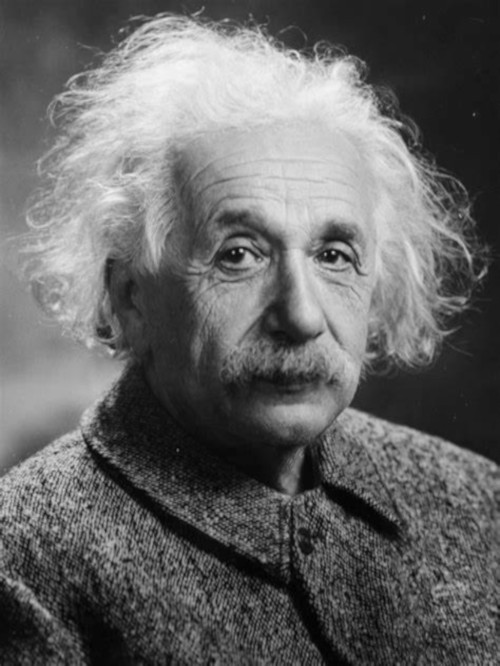
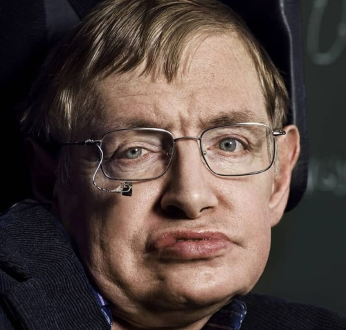
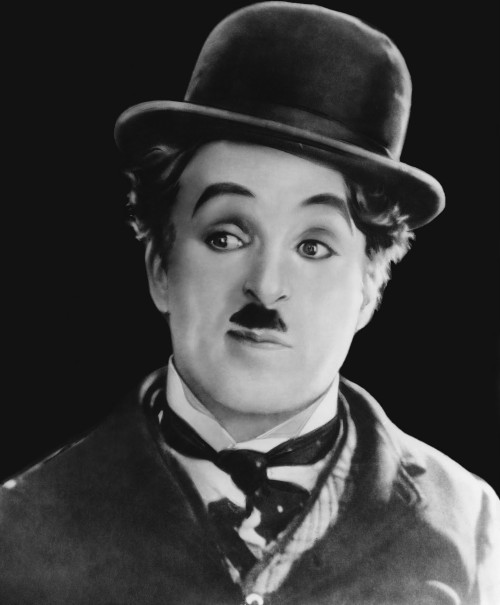
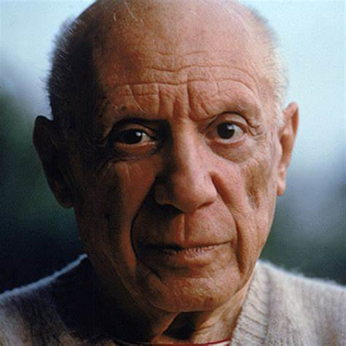

Albert Einstein

"As teses de Matemática não são certas quando relacionadas com a realidade, e, enquanto certas, não se relacionam com a realidade."
"Sem cultura moral não haverá nenhuma saída para os homens."
"O homem erudito é um descobridor de fatos que já existem, mas o homem sábio é um criador de valores que não existem e que ele faz existir."
"A humanidade se apaixona por finalidades irrisórias, que por nome a riqueza, a glória, o luxo. Desde moço, já as abominava."
"A ciência sem a religião é paralítica; a religião sem a ciência é cega."
Stephen Hawking

"A Matemática é a única linguagem que temos em comum com a Natureza."
"Assim como a luz que vemos em galáxias distantes foi emitida há milhões de anos, o que hoje vemos no Universo não é o seu presente, mas o seu passado."
"A velha idéia de um Universo essencialmente imutável, que tenha sempre existido e continue a existir para sempre, será substituída pela noção de um Universo dinâmico, em expansão, que parece ter começado num tempo finito passado e que terminar num tempo finito futuro."
"Já se foi o tempo em que as mentes deviam ser alimentadas apenas com papinha de bebê. As pessoas podem e devem ter acesso a Ciência. Se todos compartilharem informações poderão participar dos debates."
Charlie Chaplin

"A persistência é o caminho do êxito."
"A alegria é a maneira de resolver os problemas da vida."
"A beleza é a única coisa preciosa na vida. É difícil encrontrá-la, mas, quem consegue, descobre tudo."
"O tempo é o melhor autor: sempre encontra um final perfeito."
"Creio que não se pode fazer nada de grande na vida se não fizer representar o personagem que existe dentro de cada um de nós."
Pablo Picasso

"Pintar é liberta-se, e isso é essencial."
"A arte é uma mentira que nos permite atingir a verdade."
"O que conta não é aquilo que o artista faz, mas aquilo que ele é."
"O que já fiz não me interessa. Só penso no que ainda não fiz."
"Somente no silêncio atinge-se o real."